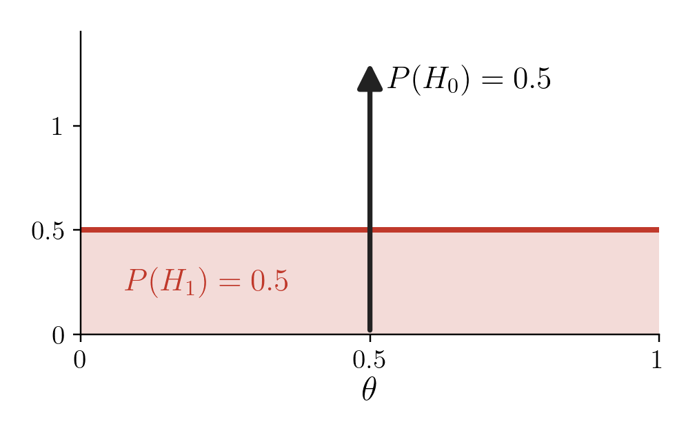
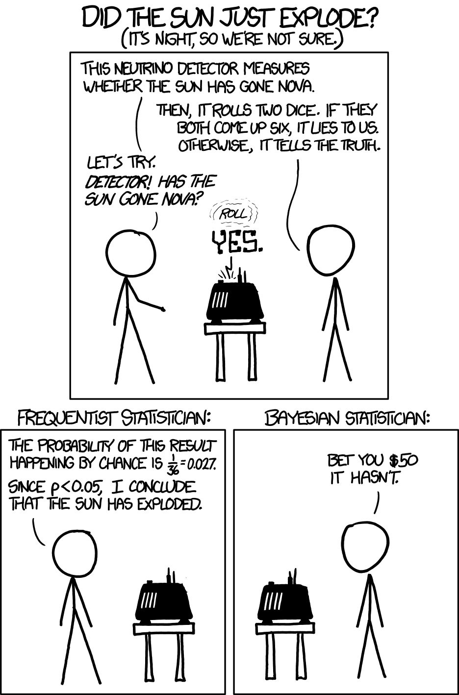

12wk-2: 베이지안식 해석 (4)
1. 강의영상
2. 장점3: 검은 백조 (이어서)
# 예제1 – 스팸메일 분류 알고리즘
스팸메일 100통과 정상메일 100통을 모았다. 낱말마다 그 낱말이 든 메일의 수는 아래와 같다.
| 낱말 | 스팸메일 100통 | 정상메일 100통 |
|---|---|---|
| ‘무료’ | \(60\) | \(5\) |
| ‘청약’ | \(30\) | \(2\) |
| ‘당첨’ | \(40\) | \(1\) |
| ‘강의’ | \(3\) | \(25\) |
| ‘베이지안’ | \(0\) | \(10\) |
Note: 여기에서 ‘무료’ 의 \(60\) 은 스팸메일 100통 가운데 60통에 ‘무료’ 가 들어 있다는 뜻. 한 메일에 ‘무료’ 가 여러 번 나와도 한 통으로 셈.
우리는 메일에 위 다섯 낱말이 있는지 없는지를 보고 그 메일이 스팸메일인지 정상메일인지를 판단하는 일에 관심이 있다. 아래 (1)–(3) 은 이 판단을 하는 방법을 구체화한 것이다.
(1) 메일을 보기 전에 스팸일 확률 \(P(\text{스팸})\) 은 모은 메일에서 스팸메일이 차지하는 비율로 계산한다고 하자. \(P(\text{스팸})\) 과 \(P(\text{정상})\) 을 구하라.
(풀이)
모은 메일 200통 가운데 스팸메일이 100통이므로 \(P(\text{스팸})=\frac{100}{200}=0.5\) 이다. 같은 방법으로 \(P(\text{정상})=\frac{100}{200}=0.5\) 이다.
(2) 스팸메일에 ‘무료’ 가 있을 확률 \(P(\text{‘무료’}\mid\text{스팸})\) 을 빈도주의와 베이지안은 각각 아래와 같이 계산한다고 하자. 여기서 \(\theta=P(\text{‘무료’}\mid\text{스팸})\) 이고, \(X_i=1\) 은 \(i\)번째 스팸메일에 ‘무료’ 가 있다는 뜻이다.
- 빈도주의: \(X_1,\dots,X_{100}\overset{i.i.d.}{\sim}Ber(\theta)\) 로 두고, \(\theta\) 의 최대가능도 추정값 \(\frac{60}{100}\) 을 쓴다.
- 베이지안: \(\theta\sim U(0,1)\), \(X_1,\dots,X_{100}\mid\theta\overset{i.i.d.}{\sim}Ber(\theta)\) 로 두고, \(\theta\) 의 사후평균 \(\frac{60+1}{100+2}=\frac{61}{102}\) 을 쓴다.
낱말이 없을 확률은 두 방법 모두 \(P(\text{‘무료’ 없음}\mid\text{스팸})=1-P(\text{‘무료’}\mid\text{스팸})\) 으로 계산한다. 이와 같은 방식으로 다섯 낱말 각각에 대하여 \(P(\text{낱말}\mid\text{스팸})\) 과 \(P(\text{낱말}\mid\text{정상})\) 을 두 방법으로 계산하라.
(풀이)
빈도주의
| 낱말 | 스팸메일 | 정상메일 |
|---|---|---|
| ‘무료’ | \(\frac{60}{100}\) | \(\frac{5}{100}\) |
| ‘청약’ | \(\frac{30}{100}\) | \(\frac{2}{100}\) |
| ‘당첨’ | \(\frac{40}{100}\) | \(\frac{1}{100}\) |
| ‘강의’ | \(\frac{3}{100}\) | \(\frac{25}{100}\) |
| ‘베이지안’ | \(\frac{0}{100}\) | \(\frac{10}{100}\) |
베이지안
| 낱말 | 스팸메일 | 정상메일 |
|---|---|---|
| ‘무료’ | \(\frac{61}{102}\) | \(\frac{6}{102}\) |
| ‘청약’ | \(\frac{31}{102}\) | \(\frac{3}{102}\) |
| ‘당첨’ | \(\frac{41}{102}\) | \(\frac{2}{102}\) |
| ‘강의’ | \(\frac{4}{102}\) | \(\frac{26}{102}\) |
| ‘베이지안’ | \(\frac{1}{102}\) | \(\frac{11}{102}\) |
- 스팸메일 · ‘베이지안’ 칸을 보면 빈도주의는 \(\frac{0}{100}=0\), 베이지안은 \(\frac{0+1}{100+2}=\frac{1}{102}\approx0.0098\) 이다. 빈도주의는 “스팸메일에는 ‘베이지안’ 이 나올 수 없다” 고 한다.
(3) “무료 청약 당첨” 이라는 메일이 왔다. 아래와 같이 \(A\), \(B\) 를 두고, \(\frac{A}{A+B}\) 를 이 메일이 스팸일 확률이라고 하자.
\[\begin{aligned}A&=P(\text{스팸})\times P(\text{‘무료’}\mid\text{스팸})\times P(\text{‘청약’}\mid\text{스팸})\times P(\text{‘당첨’}\mid\text{스팸})\\&\quad\times P(\text{‘강의’ 없음}\mid\text{스팸})\times P(\text{‘베이지안’ 없음}\mid\text{스팸})\\B&=P(\text{정상})\times P(\text{‘무료’}\mid\text{정상})\times P(\text{‘청약’}\mid\text{정상})\times P(\text{‘당첨’}\mid\text{정상})\\&\quad\times P(\text{‘강의’ 없음}\mid\text{정상})\times P(\text{‘베이지안’ 없음}\mid\text{정상})\end{aligned}\]
이 메일이 스팸일 확률을 두 방법으로 각각 구하라.
(풀이)
스팸으로 볼 확률
\[\begin{aligned}\text{빈도주의}&:\ \frac{\frac{60}{100}\cdot\frac{30}{100}\cdot\frac{40}{100}\cdot\frac{97}{100}\cdot\frac{100}{100}}{\frac{60}{100}\cdot\frac{30}{100}\cdot\frac{40}{100}\cdot\frac{97}{100}\cdot\frac{100}{100}+\frac{5}{100}\cdot\frac{2}{100}\cdot\frac{1}{100}\cdot\frac{75}{100}\cdot\frac{90}{100}}\approx0.9999\\\text{베이지안}&:\ \frac{\frac{61}{102}\cdot\frac{31}{102}\cdot\frac{41}{102}\cdot\frac{98}{102}\cdot\frac{101}{102}}{\frac{61}{102}\cdot\frac{31}{102}\cdot\frac{41}{102}\cdot\frac{98}{102}\cdot\frac{101}{102}+\frac{6}{102}\cdot\frac{3}{102}\cdot\frac{2}{102}\cdot\frac{76}{102}\cdot\frac{91}{102}}\approx0.9997\end{aligned}\]
\(P(\text{스팸})=P(\text{정상})=0.5\) 는 분자와 분모에서 지워져 위 식에는 안 보인다.
(4) “베이지안 강의” 라는 메일이 왔다. (3) 과 같은 방식으로 이 메일이 스팸일 확률을 두 방법으로 각각 구하라.
(풀이)
\[\begin{aligned}\text{빈도주의}&:\ \frac{\frac{40}{100}\cdot\frac{70}{100}\cdot\frac{60}{100}\cdot\frac{3}{100}\cdot\frac{0}{100}}{\frac{40}{100}\cdot\frac{70}{100}\cdot\frac{60}{100}\cdot\frac{3}{100}\cdot\frac{0}{100}+\frac{95}{100}\cdot\frac{98}{100}\cdot\frac{99}{100}\cdot\frac{25}{100}\cdot\frac{10}{100}}=0\\\text{베이지안}&:\ \frac{\frac{41}{102}\cdot\frac{71}{102}\cdot\frac{61}{102}\cdot\frac{4}{102}\cdot\frac{1}{102}}{\frac{41}{102}\cdot\frac{71}{102}\cdot\frac{61}{102}\cdot\frac{4}{102}\cdot\frac{1}{102}+\frac{96}{102}\cdot\frac{99}{102}\cdot\frac{100}{102}\cdot\frac{26}{102}\cdot\frac{11}{102}}\approx0.0026\end{aligned}\]
(5) “무료 청약 당첨 베이지안 강의” 라는 메일이 왔다. (3) 과 같은 방식으로 이 메일이 스팸일 확률을 두 방법으로 각각 구하라.
(풀이)
\[\begin{aligned}\text{빈도주의}&:\ \frac{\frac{60}{100}\cdot\frac{30}{100}\cdot\frac{40}{100}\cdot\frac{3}{100}\cdot\frac{0}{100}}{\frac{60}{100}\cdot\frac{30}{100}\cdot\frac{40}{100}\cdot\frac{3}{100}\cdot\frac{0}{100}+\frac{5}{100}\cdot\frac{2}{100}\cdot\frac{1}{100}\cdot\frac{25}{100}\cdot\frac{10}{100}}=0\\\text{베이지안}&:\ \frac{\frac{61}{102}\cdot\frac{31}{102}\cdot\frac{41}{102}\cdot\frac{4}{102}\cdot\frac{1}{102}}{\frac{61}{102}\cdot\frac{31}{102}\cdot\frac{41}{102}\cdot\frac{4}{102}\cdot\frac{1}{102}+\frac{6}{102}\cdot\frac{3}{102}\cdot\frac{2}{102}\cdot\frac{26}{102}\cdot\frac{11}{102}}\approx0.968\end{aligned}\]
두 방법의 차이는 낱말 확률을 어떻게 구하느냐 하나다. 본 적 없는 낱말에 빈도주의는 0 을, 베이지안은 작은 값(\(\frac{1}{102}\))을 준다. 이것이 차이를 만든다.
이 문항에서는 베이지안 방식의 승리다. 빈도주의 방식은 분자를 0으로 만들어 상대적인 비교를 무효화한다. 이러한 방식이면 무료, 청약, 당첨이라는 단어가 들어가면 스팸일 확률이 100%라고 해도 무시된다.
#
- 사실 빈도주의도 확률 0 을 그대로 쓰지는 않는다(그래서 아까 ‘베이지안의 승리’ 라고 한 것은 좀 과장이다. 빈도주의자들은 멍청이가 아니다). 낱말이 있는 메일 수와 없는 메일 수에 작은 수를 더해 0 이 나오지 않게 하는데, 더하는 수는 계산하는 사람이 고른다. 흔히 쓰는 것은 1 을 더하는 라플라스 스무딩(add-one smoothing)이다(Murphy, 2022, p. 122). 1 을 더한 값은 사전분포가 \(U(0,1)\) 일 때의 사후평균과 같고, 더하는 수가 0 이면 최대가능도 추정값으로 돌아간다(Murphy, 2022, p. 335). 곧 1 을 더한 빈도주의는 (2) 의 베이지안 표와 같은 값을 쓴다.
- 다만 빈도주의에서는 최대가능도에 없는 개념을 실제 문제 해결을 위해 따로 붙이는 것이고, 베이지안에서는 사전분포에서 저절로 그리고 자연스럽게 나온다.
3. 가설검정 (1)
- 가설검정의 논리 (빈도주의)
- 논리1: \(H_0\)를 설정 \(\Rightarrow\) \(p\)-value 계산
- 논리2: \(H_0\)와 \(H_1\)을 설정 \(\Rightarrow\) 유의수준 \(\alpha\)와 파워를 정해 기각역을 설정 \(\Rightarrow\) 의사결정
- 가설검정의 논리 (베이지안)
- 포스테리어 이용
# 예제2
1이 나올 확률이 \(\theta\) 인 동전을 5번 던져서 \(0,\ 0,\ 0,\ 0,\ 0\) 을 얻었다. 이 동전이 공평한 동전인지 빈도주의와 베이지안으로 각각 검정하라. (베이지안은 50% 는 \(\theta=0.5\) 라고 확신하고, 나머지 50% 는 \(0\) 과 \(1\) 사이 어디든 같다고 생각한다. 즉 아래와 같다)
\[\begin{cases}H_0:\theta=0.5, & P(H_0)=0.5\\ H_1:\theta\neq0.5, & P(H_1)=0.5,\quad \theta\mid H_1\sim U(0,1)\end{cases}\]

(빈도주의)
동전을 다섯 번 던져서 얻을 수 있는 경우는 아래와 같다.
// 가운데 정렬할수 있어? 0 0 0 0 0
0 0 0 0 1
0 0 0 1 0
…
1 1 1 1 0
1 1 1 1 1
이때 우리가 얻은 자료는 이 중에서 0, 0, 0, 0, 0 이다. 데이터 0, 0, 0, 0, 0 을 보고 \(H_0\)를 리젝한다면 아마 1,1,1,1,1 을 보고도 \(H_0\)를 리젝할 것이다. \(H_0\)가 참이면 이 자료와 우리 자료 0, 0, 0, 0, 0 은 각각 확률 \(\left(\frac12\right)^5=\frac{1}{32}\) 로 나온다.
이제 데이터를 보고 \(H_0\)를 리젝하기로 결정했다고 하자. 이 결정이 잘못되었을 확률은 얼마일까? 이 결정이 잘못되었다는 것은 \(H_0\)가 사실 참인데, 내가 리젝을 했다는 의미이다. \(H_0\)가 참이라면 위의 확률들을 모두 모아봤자 \(\frac{1}{32}\times2=\frac{1}{16}\) 이다.
이 확률은 “\(H_0\)를 리젝할 거야. 뭐? 그런데 \(H_0\)가 참이면 어쩔 거냐고? 책임질 거냐고? 지금 데이터를 보니까 \(H_0\)가 참인데 내가 잘못 결정할 확률이 \(\frac{1}{16}\)이거든? 이 정도의 위험은 내가 감수할게. 그냥 리젝해.”
라는 의미이다. 이 확률의 의미가 \(p\)-value이다.
정리하면 \(p\)-value는 \(H_0\)가 참일 경우 지금 자료만큼 또는 그보다 더 극단적인 데이터가 나올 확률을 의미한다.
\(H_0\)가 참일 확률을 의미하지 않음을 주의하자.
(베이지안)
\[P(\text{data}\mid H_0)=0.5^5=\frac{1}{32},\qquad P(\text{data}\mid H_1)=\int_0^1(1-\theta)^5\cdot1\,d\theta=\frac{1}{6}\]
\[ \begin{align*} P(H_0\mid\text{data})&=\frac{P(\text{data}\mid H_0)\,P(H_0)}{P(\text{data}\mid H_0)\,P(H_0)+P(\text{data}\mid H_1)\,P(H_1)}\\ &=\frac{\frac{1}{32}\cdot0.5}{\frac{1}{32}\cdot0.5+\frac{1}{6}\cdot0.5}=\frac{3}{19} \end{align*} \]
곧 이 동전이 공평할 확률은 \(P(H_0\mid\text{data})=\frac{3}{19}\approx0.16\) 이다. 따라서 \(H_0\)을 리젝하면 0.16의 확률로 틀린결정임.
# 예제3
1이 나올 확률이 \(\theta\)인 동전을 5번 던져서 \(0,\ 0,\ 0,\ 0,\ 0\) 을 얻었다. 베이지안은 95% 는 \(\theta=0.5\) 라고 확신하고, 나머지 5% 는 \(0\) 과 \(1\) 사이 어디든 같다고 생각한다. 즉 \(P(H_0)=0.95\) 이다.
- \(\begin{cases}H_0:\theta=0.5, & P(H_0)=0.95\\ H_1:\theta\neq0.5, & P(H_1)=0.05,\quad \theta\mid H_1\sim U(0,1)\end{cases}\)
- \(X_1,\dots,X_5\mid\theta\overset{i.i.d.}{\sim}Ber(\theta)\)
\(P(H_0\mid\text{data})\) 를 구하고, 빈도주의 \(p\)-value \(\frac{1}{16}\) 와 비교하라.
(풀이)
혹시 유의수준과 가설의 사전확률이 관련이 있지 않을까? \[P(\text{data}\mid H_0)=0.5^5=\frac{1}{32},\qquad P(\text{data}\mid H_1)=\int_0^1(1-\theta)^5\cdot1\,d\theta=\frac{1}{6}\]
\[P(H_0\mid\text{data})=\frac{\frac{1}{32}\cdot0.95}{\frac{1}{32}\cdot0.95+\frac{1}{6}\cdot0.05}=\frac{57}{73}\]
곧 \(P(H_0\mid\text{data})=\frac{57}{73}\approx0.78\) 이다. (사전 확률 \(0.95\)보다는 많이 떨어지긴 했지만 그래도 높다) \(p\)-value \(\frac{1}{16}=0.0625\) 와는 많은 차이가 있다. 유의수준 \(0.05\) 는 귀무가설을 사전에 95%정도 지지한다는 느낌이 아니다.
# 예제4 – 태양이 폭발했다 (xkcd 1132; Murphy, 2022, 그림 5.11)

태양이 방금 폭발했나? (밤이라서 확실하지 않다.)
이 중성미자 검출기는 태양이 신성이 되었는지 잰다. 그다음 주사위 두 개를 굴린다. 둘 다 6 이 나오면 우리에게 거짓말을 한다. 그렇지 않으면 참말을 한다.
해 보자. 검출기야! 태양이 신성이 되었니? (굴림) 예.
빈도주의 통계학자: 이 결과가 우연히 일어날 확률은 \(\frac{1}{36}=0.027\) 이다. \(p<0.05\) 이므로, 나는 태양이 폭발했다고 결론 내린다.
베이지안 통계학자: 안 터졌다에 50달러 건다.
(풀이)
숙제
(참고)
\(p\)-value는 흔히 귀무가설 아래에서 자료의 가능도로 해석되고, 그래서 작은 값은 \(H_0\) 가 그럴 법하지 않고 따라서 \(H_1\) 이 그럴 법하다는 뜻으로 해석된다. 그 추론은 대략 다음과 같다:
\(H_0\) 가 참이라면 이 검정통계량의 관측값은 아마 나오지 않을 것이다. 그런데 이 관측값이 나왔다. 그러므로 \(H_0\) 는 아마 거짓이다.
그러나 이것은 잘못된 추론이다. 왜 그런지 보려고 다음 예를 생각해 보자([Coh94] 에서):
어떤 사람이 미국인이라면, 그는 아마 국회의원이 아닐 것이다. 이 사람은 국회의원이다. 그러므로 그는 아마 미국인이 아닐 것이다.
이것은 분명히 잘못된 추론이다. 이와 달리, 다음의 논리적 논증은 타당한 추론이다:
어떤 사람이 화성인이라면, 그는 국회의원이 아니다. 이 사람은 국회의원이다. 그러므로 그는 화성인이 아니다.
두 경우의 차이는 화성인 예가 연역, 곧 논리적 정의에서 그 결과로 앞으로 나아가는 추론을 쓴다는 데 있다. 더 정확히 말하면, 이 예는 후건 부정(modus tollens)이라는 논리 규칙을 쓰는데, \(P\Rightarrow Q\) 꼴의 정의에서 시작해 \(\neg Q\) 를 관측하면 \(\neg P\) 를 결론 내릴 수 있다. 이와 달리 미국인 예는 귀납, 곧 논리적 정의가 아니라 통계적 규칙성을 써서, 관측된 증거에서 그럴 법한(그러나 반드시 참은 아닌) 원인으로 거슬러 올라가는 추론에 관한 것이다.
참고문헌
- Bochkina, N. A., & Green, P. J. (2014). The Bernstein–von Mises theorem and nonregular models. The Annals of Statistics, 42(5), 1850–1878.
- Casella, G., & Berger, R. L. (2002). Statistical Inference (2nd ed.). Duxbury.
- Gelman, A., Carlin, J. B., Stern, H. S., Dunson, D. B., Vehtari, A., & Rubin, D. B. (2013). Bayesian Data Analysis (3rd ed.). CRC Press.
- MacKay, D. J. C. (2003). Information Theory, Inference, and Learning Algorithms. Cambridge University Press.
- Murphy, K. P. (2022). Probabilistic Machine Learning: An Introduction. MIT Press.
- Wasserman, L. (2004). All of Statistics: A Concise Course in Statistical Inference. Springer.